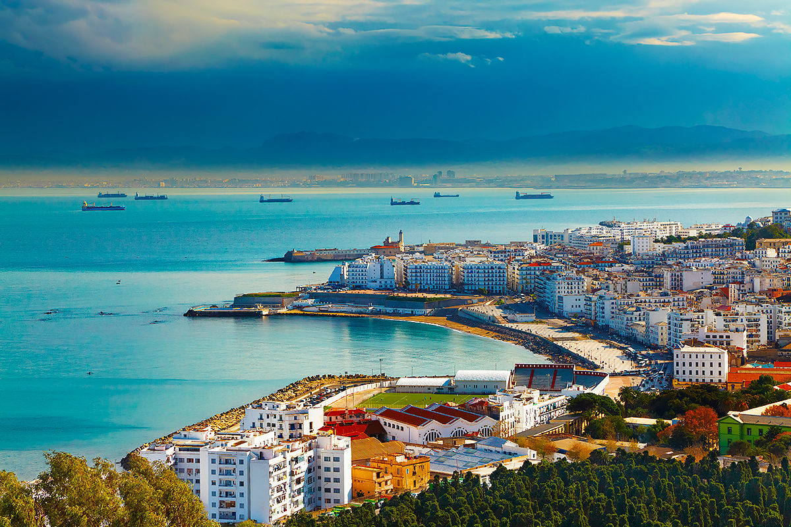

×

Algeria
Климат
Климат Алжира в северной части субтропический. Здесь средняя годовая температура составляет +16 С. Средняя температура января +5-12 C, июля - 25 C, количество осадков до 1200 мм. в горах и 200-400 мм. на равнинах. Центральная и южная части страны, с тропическим климатом, заняты пустыней Сахара, где среднесуточные колебания температуры достигают +30 С, а осадков выпадает менее 50 мм. в год. Часты пыльные бури и сухие ветра из пустынных районов.
____